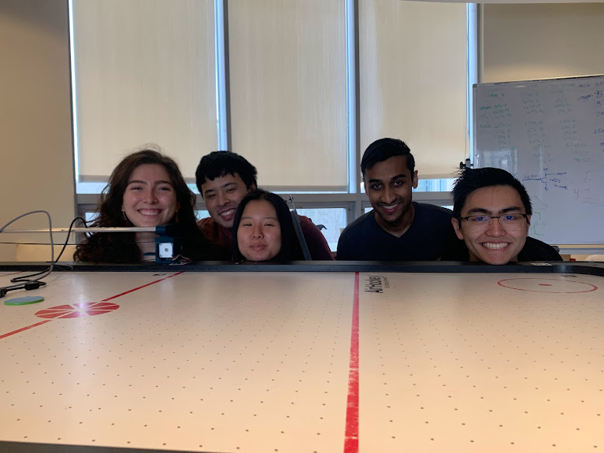

Our Process
Sprints
Our project was split into three “sprints,” each lasting for two weeks. This structure had a few key benefits:
For more details on what we accomplished during each sprint, please see the slides from our design reviews:
How We Collaborated
We used GitHub Projects to keep track of tasks and to ensure visibility across the team. In GitHub projects you can enter the names of different tasks, assign tasks to a specific category (mechanical, electrical, or software), and also assign tasks to specific people. This was super helpful, because it made it easy to look at what tasks were ongoing and who was in charge of completing them.
Github was used to track all software and electrical files.
We used GrabCAD to track changes and share parts across the team. Using GrabCAD ensured that every member had the updated parts and assembly.
Team Health
Plus-Deltas
During Sprint 2, we dedicated a class period to doing a team plus delta session, discussing what we thought went well during the sprint and what could be improved moving forward. Each of us spent a few minutes writing pluses and deltas on sticky notes, and then we each went up and stuck them to the whiteboard while explaining what we had written and why. Going through this process helped make sure everyone’s voice was heard and helped initiate conversations about what we should continue doing and what we should change moving forward. One major takeaway we decided on was that we needed to have more visibility into what others on the team were working on. We planned to implement this with weekly standups and better maintenance of our Github Projects page.
Team Bonding
In order to improve our team chemistry and boost morale, we made sure to spend time together outside of a work context. During Sprint 2, we had a blast eating dinner together at a local restaurant.
Overall Challenges
Staggered mechanical/software development timelines
One major challenge we faced was trying to frontload mechanical design, build, and assembly so that the software/electrical team would have enough time to test. Therefore, we set internal deadlines for the mechanical system that should have allowed for ample testing time. However, these deadlines ended up getting pushed as we ran into fabrication and assembly challenges and realized that aspects of the mechanical system did not work as intended. Another challenge that delayed our work was that some team members had a lot of work going on outside of PIE. All of these challenges delayed mechanical build and led to us having less testing time than desired, which forced us to descope to our MVP rather than being able to hit our stretch goal.
Work from other classes/activities
One major challenge of getting projects done at Olin is the other work everyone has going on. We are confident that if PIE was the only class/activity our team had going on this semester, we could have achieved a final product that met our stretch goal of creating a good offensive and defensive air hockey robot, perhaps with some cool additional features. However, all of us had to balance our work in PIE with other work, including work from other classes, project teams, research, and clubs. This meant that on some days/weeks, some team members were unable to put in as much time as others. As a team, we communicated with each other about what our workload looked like outside of PIE so that everyone was aware of what everyone else could be expected to get done.
Life
Sometimes life gets in the way of work and it becomes necessary to take a step back to take care of yourself. We saw this occur at times during this project, as team members got sick and needed to rest to take care of their health. When this occurred, as a team we made sure to emphasize that people should prioritize their health over working on the project, communicated when absences needed to occur, and tried our best to continue to make progress.